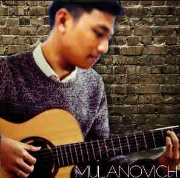
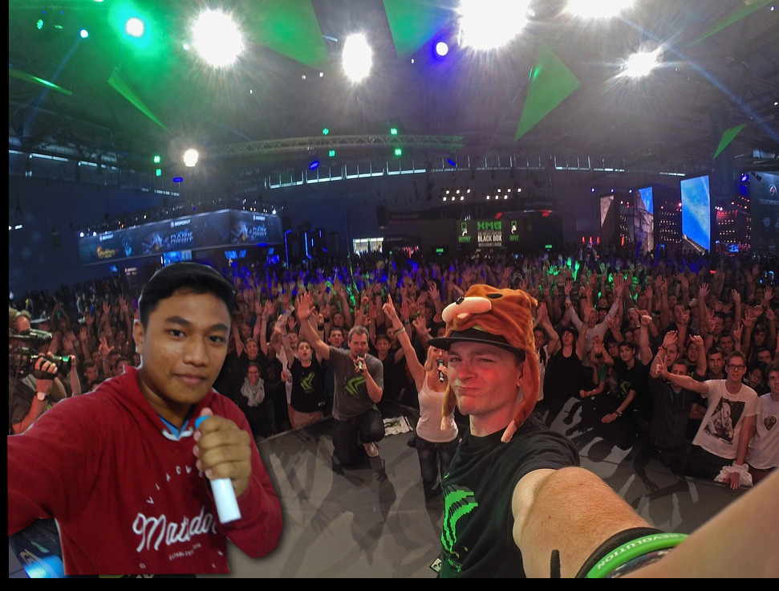
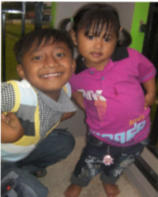
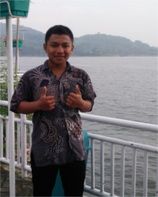
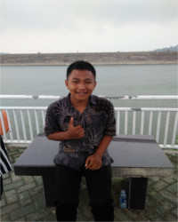
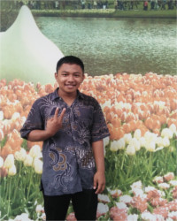

My Biodata

Nama : Alief Fajar Arrizky
TTL : Bogor, 12 Mei 2001
Alamat : Kp. Gardu rt/rw 02/02 Pamijahan, Bogor.
Hobby : Bermain Gitar, Bernyanyi.
Sekolah : SMK-SMAK Bogor
Pesan : Jangan pernah membuat orang tuamu kecewa dan menangis, karena penyesalan selalu datang diakhir.
Motto : Tolong menolong itu baik. Tapi hanya untuk orang cantik.
My Hobby
*Bermain Gitar
Bermain Gitar menjadi salah satu hobby saya semenjak masuk SMA, Kenapa? karena biasanya cowok yang bisa main gitar itu biasanya disukai perempuan, dan saya jadi termotivasi setelah melihat salah satu video di youtube. Semenjak itu saya belajar only one week, dan alhamdulillah akhirnya bisa. Dan alhamdulillah juga belum ada cewek yang deketin wkwkwk...:(
*Bernyanyi
Bernyanyi menjadi hobbi saya sejak kecil, karena dengan bernyanyi, saya bisa menyurahkan semua perasaan saya. Saya memiiki lagu kesukaan, diantaranya lagu Marry your daughter - Brian McKnight, My love - Westlife, Beautifull in white - Shane Filan, dll.
please call me at!
Don't forget to follow and add my social media ok!!!

: fajararrizky5@gmail.com
: @alieffajar12

: @alieffajar_arrizky
: 08138234XXXX
hello stalker!


  
let's read!
Assalamualaikum kawan, perkenalkan nama saya Alief Fajar Arrizky. Seorang anak yang dilahirkan dari orang tua yang luar biasa. Kenapa saya bilang begitu? karena menurut saya, orang tua adalah harta paling berharga yang patut kita sayangi selama hidup ini. Tanpa mereka, mungkin saya tidak akan menjadi seperti sekarang. Saya dilahirkan di keluarga sederhana, saya memiliki 3 saudara perempuan. Jadi cuma saya dan ayah saya yang paling ganteng dirumah wkwk. Jika saya sukses nanti, Saya memiliki keinginan untuk membahagiakan orang tua saya terlebih dahulu, saya ingin mereka melihat saya sukses, jadi saya harus serius dalam mencari ilmu.
Ini riwayat pendidikan saya, waktu SD saya bersekolah di MIT Daarul Mustaqiem, saat SMP saya bersekolah di MTsN Model Babakan Sirna, and now , saya bersekolah di sekolah yang sangat luar biasyah yaitu SMK-SMAK Bogor. Saya sekolah di SMAKBO karena selain bisa langsung mendapat kerja setelah lulus, saya juga inginlebih memperdalam bidang Ilmu Kimia, karena dalam kehidupan sehari-hari kita tidak luput dari reaksi Kimia. Di sekolah ini saya dapat merasakan dan belajar kerasnya persaingan belajar, dan bisa lebih mandiri dalam menjalani hidup, karena sayamerupakan salah satu siswa SMAKBO yang ngekos. Walaupun begitu saya memiliki banyak teman yang selalu ada (ga semua) disaat saya merasakan suka mau pun duka.
Saya Memiliki Hobby yang mainstream, yaitu bermain gitar, bernyanyi, dan menonoton film. Biasanya saya mencurahkan perasaan atau emosi saya lewat nyanyian, dan menonton saya lakukan jika saya sedang merasa bosan. Biasanya saya menonton film anime, kalo disebut banyak deh.... Saya menyukai beberapa film Korea (terdengar aneh) diantaranya, My love from another star, Descendants of the sun, She was pretty, etc,wkwk. Sejarah awal saya menonton film korea adalah pada saat kakak sayaeminjam laptop saya untuk tugas, lalu kaka saya pun mengcopy film korea dari temanya,dan dia menontonnya dirumah, akhirnya saya ikut-ikutan wkwk.
Saya membuat blog ini karena tuntutan tugas dari lab KKPI untuk pengambilan nilai UTS, so maafkan saya jika tampilan dari blog ini sangat membosankan dan berantakan. sekian cerita singkat dari saya, see you next time guys...:)